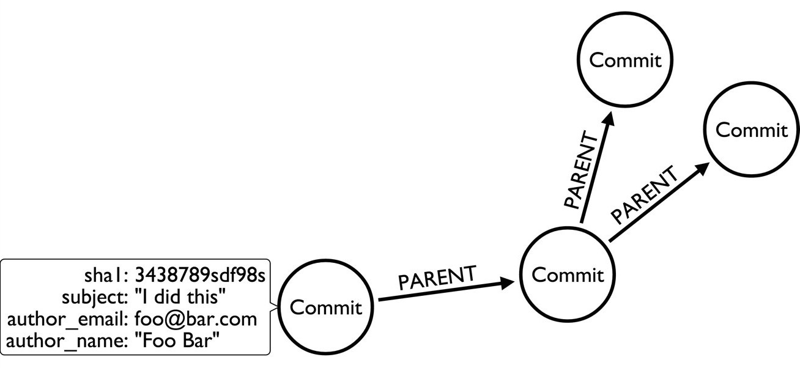
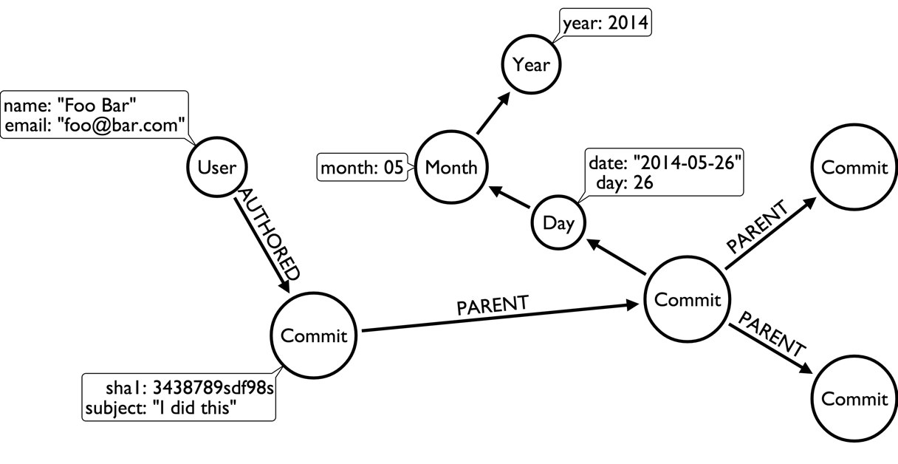
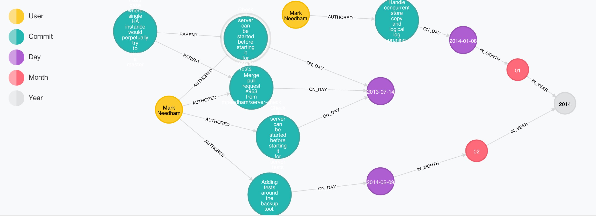
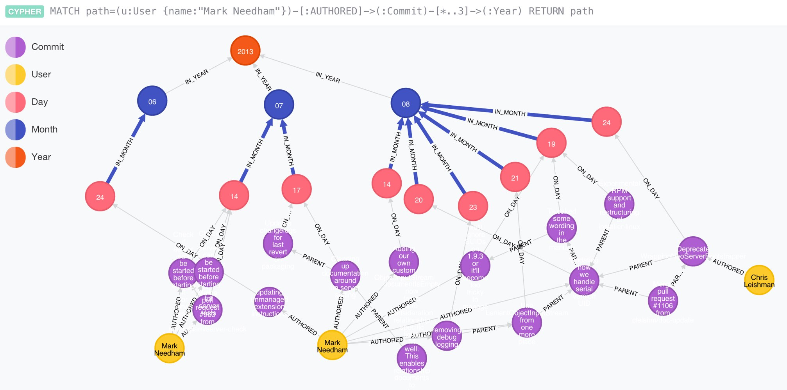

Importing Git History into Neo4j
In this blog post I want to show the power of LOAD CSV which is much more than just a simple data ingestion clause for Neo4j’s Cypher. I want to demonstrate, how easy it is to use by importing a project’s git commit history into Neo4j. For demonstration purposes I use Neo4j’s repository on GitHub which contains about 27000 commits.
It all started with this tweet by Paul Horn, a developer from Avantgarde Labs in my lovely Dresden.
View your #git commit graph in @neo4j with this (q&d) #python script: http://t.co/ToPFxYO08a
— Paul Horn (@knutwalker) May 24, 2014I really liked the idea and wanted to take a look. His python script takes the following approach:
-
Use git log formatted output
git log --format:format="%H\t'%ai'\t'%at'" -
Generate one big cypher statement
-
Use identifiers within the statement to connect commits to their parents with a
PARENTrelationship -
It also allows to run the Cypher statement against the Neo4j HTTP-Cypher-endpoint
Data Model
The datamodel used is pretty direct and not that graphy yet.

Script Cypher Output
I tried to run the script which worked well in generating the statement (except for non-ASCII-characters). It outputs a huge Cypher statement that looks like this. Such large statements put a lot of strain on the Cypher parser (and often end up in stack-overflows).
CREATE (c_0d952d4bb4c497146057ba28cf000bd0443902cd:Commit {author_email:'github@jexp.de',date_iso_8601:'2014-05-16 13:43:05 +0200',parents:['cfd697ee54108ba0e16da296f6d33f230e8bb4a2'],refs:['HEAD', 'origin/master', 'origin/gh-pages', 'origin/HEAD', 'master', 'gh-pages'],sha1:'0d952d4bb4c497146057ba28cf000bd0443902cd',subject:'presentation from jax',timestamp:'1400240585'})
CREATE (c_cfd697ee54108ba0e16da296f6d33f230e8bb4a2:Commit {author_email:'github@jexp.de',date_iso_8601:'2014-05-11 19:43:41 +0200',parents:['edf81fde813d3feedd9b12af12dd3ee145d9ff78', '31a6f819eaef8c704088838340a26fd8b7babd00'],refs:['x'],sha1:'cfd697ee54108ba0e16da296f6d33f230e8bb4a2',subject:'merge',timestamp:'1399830221'})
CREATE (c_31a6f819eaef8c704088838340a26fd8b7babd00:Commit {author_email:'github@jexp.de',date_iso_8601:'2014-05-11 19:25:54 +0200',parents:['df20f18c13a29e563d96c6c95b9f77930699f6bc'],refs:['mh'],sha1:'31a6f819eaef8c704088838340a26fd8b7babd00',subject:'renamed fosdem presentation to graphgist',timestamp:'1399829154'})
CREATE (c_edf81fde813d3feedd9b12af12dd3ee145d9ff78:Commit)
CREATE (c_df20f18c13a29e563d96c6c95b9f77930699f6bc:Commit)
....
CREATE
(c_0d952d4bb4c497146057ba28cf000bd0443902cd)<-[:PARENT]-(c_cfd697ee54108ba0e16da296f6d33f230e8bb4a2),
(c_cfd697ee54108ba0e16da296f6d33f230e8bb4a2)<-[:PARENT]-(c_edf81fde813d3feedd9b12af12dd3ee145d9ff78),
(c_cfd697ee54108ba0e16da296f6d33f230e8bb4a2)<-[:PARENT]-(c_31a6f819eaef8c704088838340a26fd8b7babd00),
(c_31a6f819eaef8c704088838340a26fd8b7babd00)<-[:PARENT]-(c_df20f18c13a29e563d96c6c95b9f77930699f6bc)
....
RETURN c_0d952d4bb4c497146057ba28cf000bd0443902cd;Unfortunately the script was too large and it also failed with non-ascii-characters in the Cypher-parser.
That’s why I decided to take my non-existant Python skills and work on the following tasks:
-
one cypher statement per line, ending with semicolon
-
use matches to connect commits
-
fixing non US-ASCII characters
-
add more commit attributes (like user-names)
-
work out some graph-refactoring for a better model (including users and a time-tree)
-
visualize & style in Neo4j browser
After changing the script it now outputs Cypher like this with one statement per line (and adds a constraint at the beginning in a separate transaction):
BEGIN
create constraint on (c:Commit) assert c.sha1 is unique;
COMMIT
BEGIN
CREATE (:Commit {author_email:'foo@bar.com',date_iso_8601:'2014-05-22 20:53:05 +0200',parents:['b6393fc9d5c065fd42644caad600a9b7ac911ae2'],refs:['HEAD', 'origin/master', 'master', 'in-index'],sha1:'934cacf9fe6cd0188be642b3e609b529edaad527',subject:'Some commit message',timestamp:'1400784785'});
CREATE (:Commit {author_email:'bar@foo.com',date_iso_8601:'2014-05-22 13:22:10 +0200',parents:['7765539ff17310f2c736ee7f0a8fc5e05180e262', '2d3abe010c36214b71c9bbbcaa9f6063947068de'],sha1:'b6393fc9d5c065fd42644caad600a9b7ac911ae2',subject:'Merge pull request #2445 from foo/bar',timestamp:'1400757730'});
...
MATCH (parent:Commit {sha1:"934cacf9fe6cd0188be642b3e609b529edaad527"}),
(child:Commit {sha1:"b6393fc9d5c065fd42644caad600a9b7ac911ae2"})
CREATE (parent)<-[:PARENT]-(child);
...
COMMITSo I could import the statement into Neo4j by just using the Neo4j-Shell:
Import
Running the Import into Neo4j using the Neo4j-Shell would be a simple as:
time ~/Downloads/neo4j-community-2.1.1/bin/neo4j-shell -path git.db -file git.cql -q
Transaction started
+-------------------+
| No data returned. |
+-------------------+
Nodes created: 1
Properties set: 9
Labels added: 1
94 ms
....
+-------------------+
| No data returned. |
+-------------------+
Relationships created: 1
3 ms
Transaction committed
real 3m23.570s
user 3m28.064s
sys 0m7.741sThe next aspect I wanted to tackle was a graph refactoring to add users and a time-tree to the commits, so the changed data model would look like this:

The refactoring were two simple Cypher statements, one for creating the users and one for the time-tree from day via month to year.
Create Users
create constraint on (u:User) assert u.email is unique;
create index on :User(name);
MATCH (c:Commit)
MERGE (a:Author:User {email:c.author_email}) ON CREATE SET a.name = c.author_name
CREATE (a)-[:AUTHORED]->(c)
REMOVE c.author_name
REMOVE c.author_email;Creating a Time Tree (day level)
create constraint on (y:Year) assert y.year is unique;
MATCH (c:Commit)
MERGE (y:Year {year:substring(c.date,0,4)})
MERGE (m:Month {month:substring(c.date,5,2)})-[:IN_YEAR]->(y)
MERGE (d:Day {date:c.date, day:substring(c.date,8,2)})-[:IN_MONTH]->(m)
CREATE (c)-[:ON_DAY]->(d);Visualising the resulting graph in the Neo4j-Browser looked like this:

Here is my adapted Python script.
Of course I couldn’t wait to tell the world:
Playing around with git log data of neo4j in @Neo4j. Thanks again @knutwalker for the script. https://t.co/u6PjgXPHxH pic.twitter.com/C39DvHzGur
— Michael Hunger (@mesirii) May 25, 2014That involved talking to my friend and colleague Mark Needham. While doing so, I realized that the git log format is actually CSV.
And as Neo4j 2.1 provides this easy LOAD CSV facility it made my life so much easier.
LOAD CSV
Just as a quick recap, here is the LOAD CSV syntax:
[USING PERIODIC COMMIT [10000]]
LOAD CSV [WITH HEADERS] FROM "http://friends.csv" AS line
MATCH (me:User {name:line.user})
CREATE (me)-[:FRIEND]->(friend:User {name: line.friend})
RETURN COUNT(*);A while back I also discovered the real secret of LOAD CSV.
It is not just a basic data ingestion mechanism but actually an ETL Powertool. Why?
-
it combines multiple aspects in a single operation
-
supports loading / ingesting CSV data from an URI
-
direct mapping of input data into complex graph/domain structure
-
data conversion
-
supports complex computations
-
create or merge data, relationships and structure
Generate the CSV File
So let’s utilize that power. And start with the CSV generation which was straightforward, using git help log for the format options.
What |
Format |
What |
Format |
sha1 |
%H |
hash |
%h |
parents |
%P |
refs |
%d |
author_email |
%ae |
author_name |
%an |
timestamp |
%at |
date_time |
%ai (ISO) |
subject |
%s |
and many more |
For generating a CSV we only needed to provide the header row and then output the fields we wanted separated by commas.
echo sha1,hash,parents,author_email,author_name,refs,subject,timestamp,date_time > ~/DropBox/Public/git.csv
git log --reverse --format='format:"%H","%h","%P","%ae","%an","%d", "%s","%at","%ai"' >> ~/DropBox/Public/git.csvHere is what it looks like:
sha1,hash,parents,autor_email,author_name,refs,subject,timestamp,date_time
"a9caf3f600c1c63aa8cc40db59bac53cabca2e50","a9caf3f","934cacf9fe6cd0188be642b3e609b529edaad527","github@jexp.de","Michael Hunger"," (HEAD, jexp/in-index, in-index)","Index Support for IN Predicates","1401011766","2014-05-25 11:56:06 +0200"
"934cacf9fe6cd0188be642b3e609b529edaad527","934cacf","b6393fc9d5c065fd42644caad600a9b7ac911ae2","andres@neotechnology.com","Andres Taylor"," (origin/master, master)","Typo","1400784785","2014-05-22 20:53:05 +0200"
"b6393fc9d5c065fd42644caad600a9b7ac911ae2","b6393fc","7765539ff17310f2c736ee7f0a8fc5e05180e262 2d3abe010c36214b71c9bbbcaa9f6063947068de","magnus.vejlstrup@neopersistence.com","magnusvejlstrup","","Merge pull request #2445 from jexp/batch-inserter-done","1400757730","2014-05-22 13:22:10 +0200"
"2d3abe010c36214b71c9bbbcaa9f6063947068de","2d3abe0","7765539ff17310f2c736ee7f0a8fc5e05180e262","github@jexp.de","Michael Hunger"," (jexp/batch-inserter-done)","fix bug in batch-insertion, CalculateDenseNodesStep. No call to super to shut down the Executor","1400757147","2014-05-22 13:12:27 +0200"
....Import with LOAD CSV
First we have to set up some indexes and constraints, some of which make the import faster, others are just convenient for fast lookup performance later.
CREATE CONSTRAINT ON (c:Commit) ASSERT c.sha1 IS UNIQUE;
CREATE INDEX ON :Commit(hash);
CREATE INDEX ON :Commit(date);
CREATE CONSTRAINT ON (u:User) ASSERT u.email IS UNIQUE;
CREATE INDEX ON :User(name);
CREATE CONSTRAINT ON (y:Year) ASSERT y.year IS UNIQUE;Then the next step is loading the actual CSV data, which I put into a Dropbox public folder for convenience.
We create the commit, connect it to its author and the day it happend on which we merge teh path to the time-tree root (year) on the fly. As last step we split out the parent commit list into a collection and link them to the commit.
This should be pretty easy and still readable. Data ingestion with mapping into a more complex and on-the-fly data conversion.
USING PERIODIC COMMIT 1000
LOAD CSV WITH headers FROM "https://dl.dropboxusercontent.com/u/14493611/git.csv" as line
CREATE (c:Commit {sha1: line.sha1, hash:line.hash, subject:line.subject,
date_time:line.date_time, date:substring(line.date_time,0,10), timestamp:toInt(line.timestamp),
parents:split(line.parents," "),
refs:case when size(line.refs) > 0 then split(substring(line.refs,2,length(line.refs)-3),", ") else null end})
MERGE (u:User:Author {email:line.author_email}) ON CREATE SET u.name = line.author_name
CREATE (u)-[:AUTHORED]->(c)
MERGE (y:Year {year:substring(line.date_time,0,4)})
MERGE (m:Month {month:substring(line.date_time,5,2)})-[:IN_YEAR]->(y)
MERGE (d:Day {date:substring(line.date_time,0,10), day:substring(line.date_time,8,2)})-[:IN_MONTH]->(m)
CREATE (c)-[:ON_DAY]->(d)
WITH c,line
WHERE line.parents <> ""
FOREACH (parent_sha1 in split(line.parents," ") |
MERGE (parent:Commit {sha1 : parent_sha1})
CREATE (c)-[:PARENT]->(parent));It is imported really quickly too, in just a few seconds I had my graph loaded and was able to visualize it in the Neo4j browser.
Nodes created: 26068
Relationships created: 77208
Properties set: 174360
Labels added: 26189
37941 ms
Now the fun starts and we can begin asking interesting questions or thinking about how we can extend it.
Some ideas:
-
pull in more repostories into a gigantic graph to see inferred social interactions and repo dependencies
-
add file information (stats) to link file change frequency to users and times
-
add weekday and time information to find out the most active period for projects
So now go ahead and test LOAD CSV for yourself, just take any dataset and import it into Neo4j. Tell me in the comments how it went and what we can do to make it easier.
Thanks!